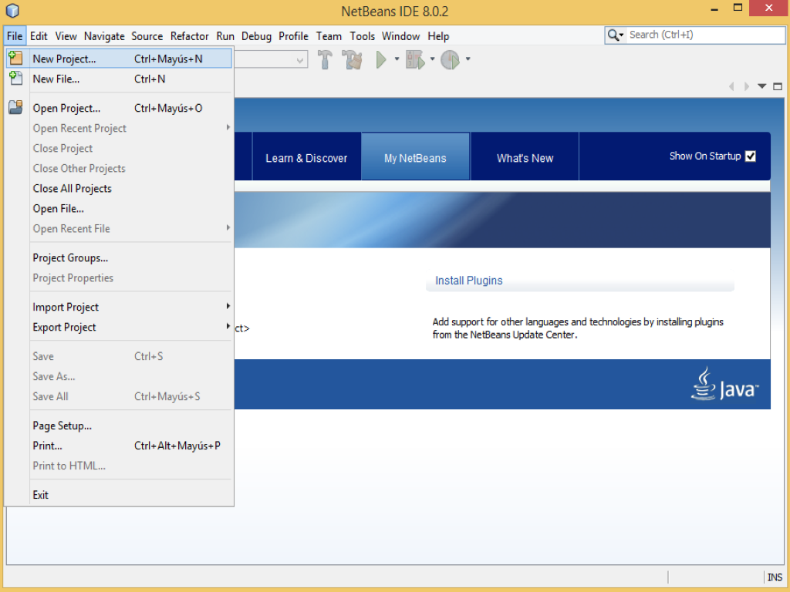

Supongo que a estas alturas, habrás leido los apuntes y visitado el enlace recomendado para la instalación detallada del JDK y NetBeans en su versión completa .
La verdad es que para mí sigue siendo de los mejores lugares donde aprender de forma serena y paso a paso, como realizarlo sin excesos de sudores frios.
Pero una vez hecho esto, y viendo que el temario ya nos introduce en el lenguaje Java, es buen momento para probar a crear el primer proyecto.
Al abrir nuestro nuevo IDE de cabecera, vemos una interfaz limpia con algunas herramientas básicas en pestañas y justo encima, la barra de herramientas de NetBeans.
Página de inicio o Start Page de NetBeans.
Si desplegamos el menú File, la primera opción es la de "Nuevo Proyecto"
 Nuevo proyecto de NetBeans.
La siguiente ventana, nos permite elegir entre las diferentes categorías disponibles, donde elegimos Java, y el tipo de proyecto: Java Application, y nos da una breve descripción de nuestra selección, pudiendo pulsar sobre Next>
Primera ventana en NetBeans.
En el paso 2, elegimos nombre y ubicación, de nuestro proyecto, así como si queremos que nos cree nuestra clase principal o Main Class y tras esto, finalizamos la creación de nuestro proyecto con su primer archivo java, mediante Finish.
Agregar nombre y localización de proyecto en NetBeans.
Al abrirse, podemos ver que nuestro espacio de trabajo se divide principalmente en dos partes bajo la barra de herramientas. A la izquierda el Explorador de proyectos con información de las clases, y en la derecha las pestañas de archivos en uso, con nuestro archivo y su estructura base creada en el área de edición de código donde vemos el método main creado, y que recordemos, sólo puede haber uno por proyecto.
Espacio de trabajo en NetBeans.
Podemos probar nuestro trabajo añadiendo un poco de código dentro de nuestro método main, para que nos muestre algún texto.
A continuación, si guardamos los cambios (icono del disquette), NetBeans compila automáticamente. Pulsando sobre la flecha verde de nuestra barra de herramientas: Run Project, o mediante F6, podemos ejecutar el código compilado.
Probando NetBeans.
Si todo va según lo esperado, debajo de nuestro código se abre una consola de salida, el área de mensajes y ejecución, mostrando el resultado.
Ejecutando en NetBeans.
¿Quieres dar un paso más y ver cómo se crea un nuevo paquete o una nueva clase para tu proyecto?. Es tan sencillo como dentro del Explorador de proyectos, acceder en Source Package o Paquete de fuentes con el botón derecho del ratón a su menú contextual y seleccionar New > Java Package, y completar con el nombre del neuvo paquete en minúsculas.
Nuevo paquete en NetBeans.
Si observamos el menú, podemos ver como, por ejemplo, disponemos de la opción para crear también una nueva clase, de forma sencilla.
Nueva clase en NetBeans.
Como habréis visto, la primera toma de contacto con NetBeans, es rápida y muestra de cómo puede ayudarnos a progresar con nuestros
proyectos.
Y, si todavía tenéis un rato y ganas de aprender y practicar más, visitar nuestra secciones de
Cursos y Recursos para no parar de picar código!.
Puede que algo se nos haya pasado. Puede que no esté claro o que necesite alguna actualización o añadido. No lo dudes y hazlo saber.